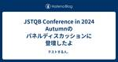

テストする人。
https://underscore42rina.hatenablog.com/
ソフトウェアテストってわかんない。テストとQAのゆるゆるブログ。
フィード

JSTQB Conference in 2024 Autumnのパネルディスカッションに登壇したよ
テストする人。
JSTQB Conference in 2024 Autumn https://jstqb.jp/prinfo/conference2024/ 参加しました＆パネルディスカッションに登壇してきました。 パネルディスカッション-1 アジャイル/DevOps/スクラムでのTMMiの活用 です。 オープン情報に名前がないので、私が出るということはわからなかったかもしれません。 今回登壇の話を聞いたのも2週間くらい前だったので、つつがなく終わってよかったなと思っています。 モデレーターの力って本当にすごいですね。 技術委員として登壇したのですが、パネリストの立場としては、QAのエンジニアリングマネージ…
1日前
日本で一番働きたい会社に入って6年がたった
テストする人。
underscore42rina.hatenablog.com からさらに2年が経ってしまった。もはや記憶がない。 去年は完全にそれどころじゃなくてすっ飛ばしてしまったけど、それはそれで↓があるのでよしとしよう。ほんと？ underscore42rina.hatenablog.com 2023/10 ~ 2023/12 もうあんまり記憶がないけど、QAのメンバーの受け入れの準備と、テスト設計をモリモリやったり、 入ってきた人たちを全速力出してもらうためのことをめっちゃやってた気がする。 あと、開発スケジュールどうやったらええんや？！みたいなのを私のマネージャーとめっちゃグラフ作ったりしてたかも…
10日前

ぐんちゃとリナがお互いの発表を見る会（#ぐんちゃリナ）をしてきた
テストする人。
connpass.com まとめはこちら togetter.com これは何か これは勝手な私の思いなのですが、お二人は互いに相手の発表をオンラインではなく直に見合うといいと思うのです。今後いくらでもその機会は訪れると思うけれど。— あきやま🏀 (@akiyama924) 2024年5月20日 これは勝手な私の思いなのですが、お二人は互いに相手の発表をオンラインではなく直に見合うといいと思うのです。 という あきやまさんの言葉を間に受けて、お互いの発表を見合う会を開催します。 というほんとに思いつきで作っちゃった勉強会です。 これを決めたのは開催の1週間前。DMでちょっとお茶しませんか？のノリ…
3ヶ月前
スクフェス新潟2024でお話ししたりギャザリングしてきたよ
テストする人。
昨日美味しかったし楽しかったので、今日もやっていきます #scrumniigata pic.twitter.com/k43GIydi4O— リナ？ (@____rina____) 2024年5月10日 スクフェス私が現地参加したいうちのひとつ新潟でお話ししてきました。 www.scrumfestniigata.org 私がどうしても現地参加したかったスクフェスは２つあって、 １つは地元のスクフェス福岡。そしてテストやQAに多くの情熱を捧げていると勝手に思っているのがこの新潟だったからです。 今回多くの初めましてのかたと、スクフェス福岡ぶりのお久しぶりですの方と、オンラインではしってるあのひと〜…
5ヶ月前
エンジニアリングマネージャーになった
テストする人。
3月1日付けでQAのエンジニアリングマネージャーになりました。 先月テックリードになったので、兼任という形でエンジニアリングマネージャー（EM）をするらしいです。 テックリードというのは気づいたらそういう名前がついてたかんじで、EMは意思表示などがあるので前もって聞いていました。 そういえば、兼任するんだっけ？と思って聞いたSlackの返事のやりとりがこちら 上長のYesのリアクションに、高須クリニックと返すくらいには今日も元気です！— リナ？ (@____rina____) 2024年3月1日 エンジニアリングマネージャーになること そういえば、入社してから当時のマネージャーに マネージャー…
7ヶ月前
QAエンジニアがテックリードになっちゃった
テストする人。
2月から組織改変（そんなに変わったわけでもないけど）があって、テックリードという役割をもらうことになりました。 昔から「テックリード」って響きがかっこいいなって思っていました。 なのでうれしい。 といっても辞令がくるとかでもなくて、定例でそのことを知ったのでとくに大きなリアクションはしなかったのだけど。 実際は私は窓口くらいが近い感じではあって、つい最近まで一人目QAって感じだったので役割は特に変わらない。 エンジニアからの手厚いフォローがないとテックな話はなかなかむずい。 もともと私はプロダクトよりだったり、プロセスだったりスクラムマスターとかには少し強みがあるQAで、 テックリードを名乗る…
8ヶ月前
新規事業でMVPをいただきましたよ！
テストする人。
自分が何かをいただくときはこれ以上がんばれないくらいがんばったときだなぁと思うなど— リナ？ (@____rina____) 2024年1月26日 ちょっと外向きにはややこしいんですが、私は今メルカリという会社の新規事業にいます。 そこでメルカリ ハロという新しいサービスをつくっているところです。 about.mercari.com 前にいたソウゾウのように、新しい会社をつくってはないんですが、組織としては同じ（すでにそれ以上？）の規模で組織があり、 今回その組織内の表彰（Valueアワード）でMVPをいただくことができました。 *1 Valueアワードは、Go Bold, All for o…
8ヶ月前
2023ふりかえり
テストする人。
２０２３年の振り返り 1月 子どもを修学旅行へ行かせるために自宅で引きこもってた。 会社のイベントだった屋形船に乗れなかった。 2月 記憶がない たぶん3月の登壇資料を作っていたと思う。 3月 QAメンバーでJaSST'23 Tokyoにオンライン参加した。今年はちょっと集中力が足りなかった。 登壇２つ ブログ1本 スクラムフェス confengine.com スクラムフェス福岡にいってきたぞ！（登壇もしたよ） - テストする人。 スクラムフェスがいよいよ私の本拠地でやる！ということで、久々に何が何でも出たい！ あらゆるものを使って！の境地で福岡であることをゴリ押ししてプロポーザルを勝ち取った…
9ヶ月前
JSTQBカンファレンスでモデレーターをして、ISTQBの会議に参加してきたって話（ほぼポエム）
テストする人。
途中まで書いて放置してたので投稿しようとしたら記事が消えてしまったので、書き直し・・・ ほぼ日記とポエムです。 jstqb.jp 9月に１週間夏休み＋αで東京にいました。 上記のJSTQBカンファレンスや、ISTQBの会議(GA)に参加しました。 istqbga2023a.org GAが日本で行われるのは10年以上ぶりに行われました。 私はJSTQBの技術委員として、GAに参加することができるのですが、今まで参加したことがありませんでした。（オンラインではあるけど) この機会に空気を味わってこようというカジュアルな目的で参加しています。 また、この企画はJSTQBのメンバーがしているので、当日…
9ヶ月前
アジャイルテストの四章限とワーク
テストする人。
adventar.org 25日目です。 毎年ひとり完走アドベントカレンダーを書いているんですが、今年は仕事関連以外のことをあまりできていないので仕事ネタにしました。 🎄🎄🎄🎄🎄🎄🎄🎄🎄🎄🎄🎄🎄🎄🎄🎄🎄🎄🎄🎄🎄🎄🎄🎄 speakerdeck.com 役になりきってほしいものを出してみて この図なんだけど、当日お伝えできなかった発見があって（いやまだ発見ってほどじゃないかも） アジャイルテストの四章限 アジャイルテストの四章限に似てるんだよね。 アジャイルテストの四章限は上をビジネス面で下が技術面としているのだけど 私のワークではビジネスである人たちの気になることが、実は四章限目でほしいものだっ…
10ヶ月前
エンジニアの帽子をかぶるタイミング
テストする人。
adventar.org 24日目です。 毎年ひとり完走アドベントカレンダーを書いているんですが、今年は仕事関連以外のことをあまりできていないので仕事ネタにしました。 🎄🎄🎄🎄🎄🎄🎄🎄🎄🎄🎄🎄🎄🎄🎄🎄🎄🎄🎄🎄🎄🎄🎄🎄 speakerdeck.com 役になりきってほしいものを出してみて エンジニアの気持ちになるとき この図なんだけど、当日お伝えできなかった話。 講演では、各役割のお気持ちになるのがテストをするときは大事！って話をしたんだけど、 常に４つの役割になるのは難しくて、実際は帽子を被り直す（役をチェンジする）こともやっています。 （必ずではないし混ざってることもたくさんあるけど） で、…
10ヶ月前
あ、今やっちゃいますね〜
テストする人。
adventar.org 23日目です。 毎年ひとり完走アドベントカレンダーを書いているんですが、今年は仕事関連以外のことをあまりできていないので仕事ネタにしました。 🎄🎄🎄🎄🎄🎄🎄🎄🎄🎄🎄🎄🎄🎄🎄🎄🎄🎄🎄🎄🎄🎄🎄🎄 今日のタイトルは、あさかいのファシリをしているときによく私が言っている言葉です。 あさかいではいつもJIRAの Active Sprintというタスクボードを眺めながらあさかいをしています。 そのときに、実際にタスクが完了しているのに、DONEにしていないというようなことがよくあります。 （他にも着手しているのにTODOのままだったり） これを言うと「あとやっておきます」と言われ…
10ヶ月前
アルバイトの学生エンジニアにテストを教えると、そのあともテストを気にするエンジニアになった
テストする人。
adventar.org 22日目です。 毎年ひとり完走アドベントカレンダーを書いているんですが、今年は仕事関連以外のことをあまりできていないので仕事ネタにしました。 🎄🎄🎄🎄🎄🎄🎄🎄🎄🎄🎄🎄🎄🎄🎄🎄🎄🎄🎄🎄🎄🎄🎄🎄 タイトルの通りであまり深い話はないんだけど。 昔働いていた会社では、大学生のアルバイトや、今のインターン学生みたいに内定前だったか内定者だったかのエンジニアが いたんですよね。 そのときに、私の仕事のヘルプをしてくれていて、 その後そのままその会社のエンジニアになった人もいて（先に内定決まっていたかもしれないけど忘れた） その会社はフルスタックエンジニアになってもらうんだったけど…
10ヶ月前
割とカジュアルにチケットを切っちゃう
テストする人。
adventar.org 21日目です。 毎年ひとり完走アドベントカレンダーを書いているんですが、今年は仕事関連以外のことをあまりできていないので仕事ネタにしました。 🎄🎄🎄🎄🎄🎄🎄🎄🎄🎄🎄🎄🎄🎄🎄🎄🎄🎄🎄🎄🎄🎄🎄🎄 今の会社で初めてQAエンジニアというかテストをする人たちと一緒に働いているんですけど 私は他の人に比べてかなりカジュアルにチケット切っちゃうみたいです。 いや、だって忘れるんだもん。 他の人を見ていると、Slackで状況確認して、これは不具合でチケットあげたほうがいいですね！ってなってから書くことも多いみたい。 もちろん不具合って一発でわかるものならチケットすぐに書くのだろうけど…
10ヶ月前
テストプランって大事なんだなーって話
テストする人。
adventar.org 20日目です。 毎年ひとり完走アドベントカレンダーを書いているんですが、今年は仕事関連以外のことをあまりできていないので仕事ネタにしました。 🎄🎄🎄🎄🎄🎄🎄🎄🎄🎄🎄🎄🎄🎄🎄🎄🎄🎄🎄🎄🎄🎄🎄🎄 昨日に引き続いて、テストプランの話。 いや、大事なことなんて5年以上前からわかってはいたんですよ。 とはいえ、なくてもそんなに困んない世界にいたんだなーって思っています。今。 今までは、手の届く範囲の開発組織や、QA組織にいたので、話したり任されたりで特に困らなかった。 一時期書いてみたりもしたけど、結局運用するほど大事なものには昇華できてないとおもいます。 それがいま、書かない…
10ヶ月前
はじめて書くテストプランもちゃんとしたフォーマットがあれば大丈夫！そうISO/IEC/IEEE 29119とChat GPTがあればね！
テストする人。
adventar.org 19日目です。 毎年ひとり完走アドベントカレンダーを書いているんですが、今年は仕事関連以外のことをあまりできていないので仕事ネタにしました。 🎄🎄🎄🎄🎄🎄🎄🎄🎄🎄🎄🎄🎄🎄🎄🎄🎄🎄🎄🎄🎄🎄🎄🎄 タイトルのとおりです。 わたし、今までちゃんとテストプラン書いたことないんですよね。書いても自分だけとか、自分と自分のPdMだけが見るくらいものしか書いたことがない。 でも、今回ちょっとちゃんとしたテストプランを作成することになって。 そこで登場するのがChatGPTさんです。 会社には社内で使える、つまり社外秘情報をいれても大丈夫なChatGPTがあります。（ChatGPT-4…
10ヶ月前
再現確認をするときってキッチンに行く時のお気持ち
テストする人。
adventar.org 18日目です。 毎年ひとり完走アドベントカレンダーを書いているんですが、今年は仕事関連以外のことをあまりできていないので仕事ネタにしました。 🎄🎄🎄🎄🎄🎄🎄🎄🎄🎄🎄🎄🎄🎄🎄🎄🎄🎄🎄🎄🎄🎄🎄🎄 再現確認をするときも大きく二つあるような気がします。 狙った動きをして不具合を見つけたとき もう一つは、割と無意識に動かしていて、ん？あれ？おかしい気がする とか、何もしてないのに壊れた（そんなことはないのに稀によくある） みたいなときです。 前者の場合は、手順も記憶しているので、再現手順は同じ手順をするだけなので特に困ることはないんですが、 後者の場合は、無意識に引き起こしてい…
10ヶ月前
リナ流テスト設計方法 4 バックエンドが入るようなところの設計のやり方
テストする人。
adventar.org 17日目です。 毎年ひとり完走アドベントカレンダーを書いているんですが、今年は仕事関連以外のことをあまりできていないので仕事ネタにしました。 🎄🎄🎄🎄🎄🎄🎄🎄🎄🎄🎄🎄🎄🎄🎄🎄🎄🎄🎄🎄🎄🎄🎄🎄 リナ流設計方法 www.jasst.jp で話した話をもうちょっと切り取って書こうかなというお気持ちになったのでちょっと考える 長くなりそうだったら途中でやめるかも。 この書き方は自分がむかしっから書いている基本スタイルです。 前提として、私は画面を操作するようなシステムやサービスのテストをすることが多いです。 カテゴリーとしては大きく３つあります。 デフォルトの表示系 動作系で…
10ヶ月前
リナ的テスト設計方法 3 バックエンドが走らない処理の設計で何をするのか
テストする人。
adventar.org 16日目です。 毎年ひとり完走アドベントカレンダーを書いているんですが、今年は仕事関連以外のことをあまりできていないので仕事ネタにしました。 🎄🎄🎄🎄🎄🎄🎄🎄🎄🎄🎄🎄🎄🎄🎄🎄🎄🎄🎄🎄🎄🎄🎄🎄 リナ流設計方法 www.jasst.jp で話した話をもうちょっと切り取って書こうかなというお気持ちになったのでちょっと考える 長くなりそうだったら途中でやめるかも。 この書き方は自分がむかしっから書いている基本スタイルです。 前提として、私は画面を操作するようなシステムやサービスのテストをすることが多いです。 カテゴリーとしては大きく３つあります。 デフォルトの表示系 動作系で…
10ヶ月前
リナ的テスト設計方法 2 : 最初の表示系で何を設計して何をテストするのか
テストする人。
adventar.org 15日目です。 毎年ひとり完走アドベントカレンダーを書いているんですが、今年は仕事関連以外のことをあまりできていないので仕事ネタにしました。 🎄🎄🎄🎄🎄🎄🎄🎄🎄🎄🎄🎄🎄🎄🎄🎄🎄🎄🎄🎄🎄🎄🎄🎄 リナ流設計方法 www.jasst.jp で話した話をもうちょっと切り取って書こうかなというお気持ちになったのでちょっと考える 長くなりそうだったら途中でやめるかも。 この書き方は自分がむかしっから書いている基本スタイルです。 前提として、私は画面を操作するようなシステムやサービスのテストをすることが多いです。 カテゴリーとしては大きく３つあります。 デフォルトの表示系 動作系で…
10ヶ月前
リナ的設計方法
テストする人。
adventar.org 14日目です。 毎年ひとり完走アドベントカレンダーを書いているんですが、今年は仕事関連以外のことをあまりできていないので仕事ネタにしました。 🎄🎄🎄🎄🎄🎄🎄🎄🎄🎄🎄🎄🎄🎄🎄🎄🎄🎄🎄🎄🎄🎄🎄🎄 リナ流設計方法 www.jasst.jp で話した話をもうちょっと切り取って書こうかなというお気持ちになったのでちょっと考える 長くなりそうだったら途中でやめるかも。 この書き方は自分がむかしっから書いている基本スタイルです。 前提として、私は画面を操作するようなシステムやサービスのテストをすることが多いです。 カテゴリーとしては大きく３つあります。 デフォルトの表示系 動作系で…
10ヶ月前
JIRAがないと生きていけない
テストする人。
adventar.org 13日目です。 毎年ひとり完走アドベントカレンダーを書いているんですが、今年は仕事関連以外のことをあまりできていないので仕事ネタにしました。 🎄🎄🎄🎄🎄🎄🎄🎄🎄🎄🎄🎄🎄🎄🎄🎄🎄🎄🎄🎄🎄🎄🎄🎄 1日目もJIRAの話だったけど、やっぱりJIRAがないと無理ですって話のつづき。 最近やっていることを雑に 前提として、現在はスクラム開発はやっていないです。ウォーターフォールともアジャイルとも言い切れない感じ。 Label: タイムラインとか、JQLとかダッシュボードに使うために使っている。つかいまくり。プロダクトの領域やフェーズやロールで作ったりしている。あとWBSにも使って…
10ヶ月前
私が組織でQAを配置するとしたら
テストする人。
adventar.org 12日目です。 毎年ひとり完走アドベントカレンダーを書いているんですが、今年は仕事関連以外のことをあまりできていないので仕事ネタにしました。 🎄🎄🎄🎄🎄🎄🎄🎄🎄🎄🎄🎄🎄🎄🎄🎄🎄🎄🎄🎄🎄🎄🎄🎄 今の所のわたしがQA組織をつくるとしたら、 スクラムinQAと、Enablingチームに オートメーション強いQAエンジニアの体制にしたいです。 スクラムinQAとは、スクラムチームの中でQAという領域を得意とするエンジニアがスクラムチームメンバーとして働くことです。 Enablingチームとは、開発する上での困りごとを解決してくれるチームのことで、たとえばCI/CDの構築やSR…
10ヶ月前
うっかりでっかいマトリクスを作ってしまったら
テストする人。
adventar.org 11日目です。 毎年ひとり完走アドベントカレンダーを書いているんですが、今年は仕事関連以外のことをあまりできていないので仕事ネタにしました。 🎄🎄🎄🎄🎄🎄🎄🎄🎄🎄🎄🎄🎄🎄🎄🎄🎄🎄🎄🎄🎄🎄🎄🎄 私の領域や開発体制に限りますが、でっかいマトリクスを作らないといけないようなことはないです。 なので、そうなりそうになったときは（自分はないんだけど） 「何が確認したいのか」 「組み合わせる必要があるのか」 組み合わせる必要があるのか？が多分ほぼないからないのかも・・・ でも整理したいときは、基本的にGIHOZかホワイトボードとかに図を書いたり、デシジョンテーブル書いたりとかして…
10ヶ月前
テストって名前があると全部自分がやらないといけないの？ってプレッシャーがくるぅ
テストする人。
adventar.org 10日目です。 毎年ひとり完走アドベントカレンダーを書いているんですが、今年は仕事関連以外のことをあまりできていないので仕事ネタにしました。 🎄🎄🎄🎄🎄🎄🎄🎄🎄🎄🎄🎄🎄🎄🎄🎄🎄🎄🎄🎄🎄🎄🎄🎄 私は15年くらい、テストとか品質関連の仕事をしていて、今はQAエンジニアという職種で働いていますが、 それまでは自分で名前をつけていた（会社にそんな職種がなかった）ので、テスターだったりテストエンジニアだったりと名乗っていました。 で、当時、「テスト」と名のつくものは、全部自分の領域なのかなってなんかプレッシャーを勝手にかけていた。 セキュリティテストもだし、オートメーションテス…
10ヶ月前
テストを考えるのにChatGPTは使えそう
テストする人。
adventar.org 9日目です。 毎年ひとり完走アドベントカレンダーを書いているんですが、今年は仕事関連以外のことをあまりできていないので仕事ネタにしました。 🎄🎄🎄🎄🎄🎄🎄🎄🎄🎄🎄🎄🎄🎄🎄🎄🎄🎄🎄🎄🎄🎄🎄🎄 テストケース出してだととんでも無いものを出してきてイライラしました。 条件を出した上で、テスト観点（Point of View）を出してというと、まともな（そして私もそういえば忘れてた）観点を出してくれたのでよさそうだなって思いました。 相手が人でもChatPGTでも聞き方と欲しいアウトプットの例は大事。
10ヶ月前
QAエンジニア（テストエンジニア）がなぜスクラムマスターに向いている（人が一定数いる）のか
テストする人。
adventar.org 8日目です。 毎年ひとり完走アドベントカレンダーを書いているんですが、今年は仕事関連以外のことをあまりできていないので仕事ネタにしました。 🎄🎄🎄🎄🎄🎄🎄🎄🎄🎄🎄🎄🎄🎄🎄🎄🎄🎄🎄🎄🎄🎄🎄🎄 たぶんアドカレ以外にちゃんとかくか、これにあとで追記どんどんしないといけない気がするけど 私はテストエンジニアだったころに、案件をいくつも抱えていて、つねにテスト実行のスケジュールパズルを年中やっていました。 そうすると、ここまでにこれがこないと次の案件に影響がでる。 そのためには、ここまでにこの機能だけでもくれ。とか とりあえずマスタメンテ画面だけでもくれ。とか 実装スケジュール…
10ヶ月前
テスト技法をいつ使うか
テストする人。
adventar.org 7日目です。 毎年ひとり完走アドベントカレンダーを書いているんですが、今年は仕事関連以外のことをあまりできていないので仕事ネタにしました。 🎄🎄🎄🎄🎄🎄🎄🎄🎄🎄🎄🎄🎄🎄🎄🎄🎄🎄🎄🎄🎄🎄🎄🎄 とはいえ、テスト技法って武器は我々にはめちゃくちゃ必要なんだよ武器だけ持ってて使い所間違ってもしんどいけど— リナ？ (@____rina____) 2023年11月7日 タイトルの主語がでかい。 今日は、私が一番使うデシジョンテーブルの話。 いつ使うか。仕様がわからなくなったとき。 どのパターンをテストしたいかを仕様整理するのに使うことが多いです。それ、テスト設計や。 一番使うの…
10ヶ月前
サイレントカスタマーの気持ちを汲み取りたい
テストする人。
adventar.org 6日目です。 毎年ひとり完走アドベントカレンダーを書いているんですが、今年は仕事関連以外のことをあまりできていないので仕事ネタにしました。 🎄🎄🎄🎄🎄🎄🎄🎄🎄🎄🎄🎄🎄🎄🎄🎄🎄🎄🎄🎄🎄🎄🎄🎄 なんも落ちはありません。 たぶん一番多いのってサイレントカスタマー（不満はあってもそれをわざわざ言うことをしないお客さま）で 私も普段の生活では不満があってもサイレントカスタマーになることの方が多いです。 でもこういうお客さまの声が拾いやすくなる仕組みがあるといいなぁ。 たとえばアンケートでも数字だけをいれられる（コメントは任意）だったり、匿名だったり、 自分の今後にペナルティーに…
10ヶ月前
期待値を聞いてみよう
テストする人。
adventar.org 5日目です。 毎年ひとり完走アドベントカレンダーを書いているんですが、今年は仕事関連以外のことをあまりできていないので仕事ネタにしました。 🎄🎄🎄🎄🎄🎄🎄🎄🎄🎄🎄🎄🎄🎄🎄🎄🎄🎄🎄🎄🎄🎄🎄🎄 もうQA（私たちの会社では動詞として使う場合はテスト実行のことを指します）終わったあとなどに少し修正して、再度テストして欲しいときや、ライブラリーのバージョンアップをしたときなどに、ざっとテストしてほしいなーってときがあるようです。 以前、「QAしてください」って雑に投げられていたんですが 「QAの期待値はなんですか？」と聞いてみたら、それ以降、どういうテストがして欲しいかがスムー…
10ヶ月前